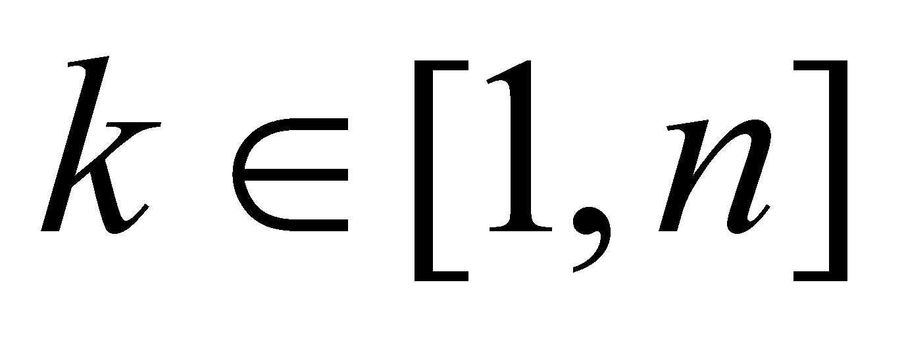
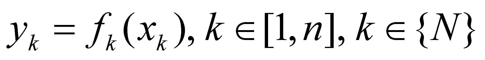
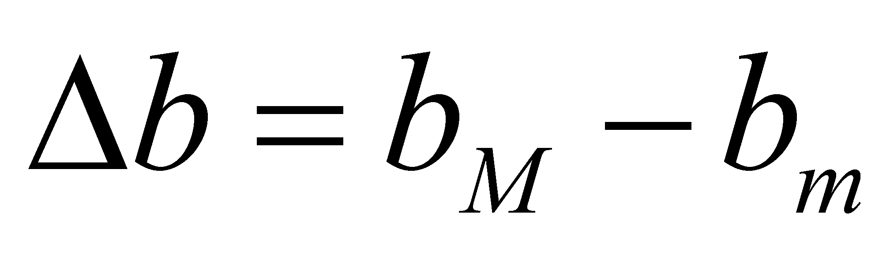
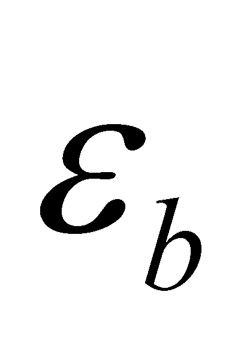
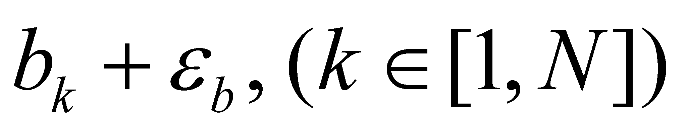
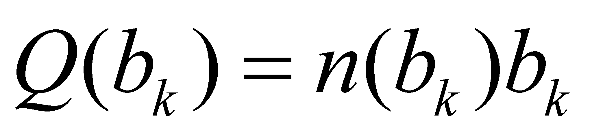
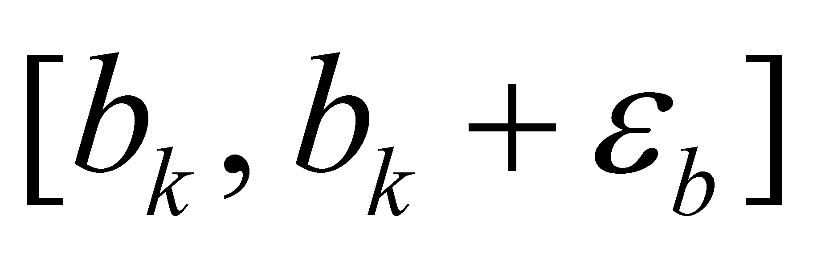

|
|
|
Let us assume that we have a library shelf on which there is a known n number of books, carefully arranged on the vertical position and with an invariant succession (their arrangement order must not be permanently changed). If we assign a running number to each book (according to the usual manner, in ascending order, from left to right) we will have a series of objects (real, book-type) arranged in numerical order. Each book from this series shall have a related natural number , number which represents a new property (running number in series) associated to each object, besides the model properties of the particular item, called book. We have therefore a finite set of n objects with their related finite number of features. In this example, few attributes which are specific to a book-type of object are: the title, author’s name, release date, number of pages, size, type of the contained data (literature, textbook, technical-scientific data), classification index and many others. If we make a list with the correspondence between the book title (dependent variable) and its running number from the shelf (independent variable) we shall have a collection of assignment relations of the property title within the ordered set of running numbers from the interval 1,n (that is the support).
This collection of assignment relations (the numerically arranged titles list) make-up the distribution of the title attribute on the support 1,n. In a more general case, the abstract object ordered and finite series of objects is a distribution of the property object on the support made-up from a finite segment of the set of integer or natural numbers.
Definition 2.4.1: A distribution is considered to have a discrete support if it has a discontinuous support, made-up from an ordered series of disjoint support intervals.
A discrete support distribution of a single type of attribute y on n objects of x type, under the assumption that the assignment relation is not invariant (similarly with the relation 2.2.1), has the following expression:
 (2.4.1)
Based on the above-mentioned issues, we can make a deduction that the virtual distributions on continuous supports are approximated by means of realizable distributions with discrete support, because their support is always divided into a finite set of objects (at limit, DP-type objects), with invariant sizes for a certain distribution.
Further on, we may assume that we have a set {M} with a total number NT objects which all have property B, but on a different extent from an object to another (there is no uniform distribution). There are objects which own the property B in a small amount bm and others which have it in a large amount bM. If we divide the interval  in an N number of DP of amount , an integer number n(bk) shall correspond to a such interval with the boundaries bk and shall be an integer number n(bk), the number of objects set {M} which own property B in amount bk. In this case, the amount (property) B is the support attribute (being independent variable ordered in a series of N DP), and n(bk) is the distributed attribute (dependent), the total number of objects which correspond to a DP support. This integer shall be called the population of that support interval, and because it is an integer number, it clearly has discrete values. In this case, we are dealing with a primary realizable distribution of an attribute assigned with discrete values.
If it is taken into account that the only known numerical value from a support DP is the inner reference of the interval (value bk, see also annex X.3), resulting that all the elements belonging to a support DP have that value assigned on them, otherwise speaking, we have an uniform distribution with value bk. If the attribute B is cumulative, the quantity:
 (2.4.2)
is the total amount (stock) of attribute B distributed on the population of the interval .
We shall return to this type of distribution after establishing in next chapter what do object and set of objects mean.
Comment 2.4.1: In case that the set {M} has a very large number of objects, such as the set of molecules from a gas in a precinct, the populations of each support interval may also have a very large number of elements. In such conditions, although the populations are actually integers, they can be written only under a scientific format (see annex X.1) and in this way, the decimal numbers are used. Another reason why this kind of populations are not represented by integers is also due to the inaccurate knowing of the number of elements belonging to the populations with a very high number of elements, or simply, due to the truncation (approximation) of these numbers by means of easier realizable values.
Copyright © 2006-2011 Aurel Rusu. All rights reserved.